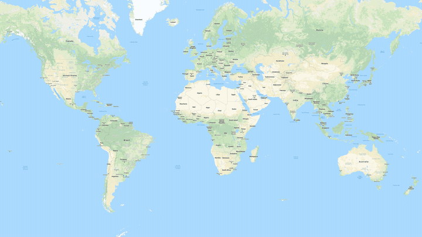

37 326 080
Confirmed Cases
Last update: 12 October 2020, 05:30 GMT+5:30
1 073 973
Confirmed Deaths
Last update: 12 October 2020, 05:30 GMT+5:30
235
Countries, areas or territories
with cases
Last update: 12 October 2020, 05:30 GMT+5:30


Corona viruses are a large family of viruses which may cause illness in Humans. In humans, several coronaviruses are known to cause respiratory infections ranging from the common cold to more severe diseases such as Middle East Respiratory Syndrome (MERS) and Severe Acute Respiratory Syndrome (SARS). The most recently discovered coronavirus causes coronavirus disease COVID-19.
Numbers at a glance
37 326 080
Confirmed Cases
Last update: 12 October 2020, 05:30 GMT+5:30
1 073 973
Confirmed Deaths
Last update: 12 October 2020, 05:30 GMT+5:30
235
Countries, areas or territories
with cases
Last update: 12 October 2020, 05:30 GMT+5:30
Symptoms , Prevention and How it can be Treated?
.
What are the Steps Taken by the Government to Fight Coronavirus in India?
Precautionary Steps
While the virus scored globally, the government took proactive measures to control its spread in India. It conducted heavy screenings and mandatorily quarantined incoming International travellers and also conclusively suspended all visas, except for diplomats and employment, till April 15. All cross-national borders were sealed, and railway operations were suspended.
Informative Steps
To curb the growing panic and to distribute viable information, the government provides authentic information on the virus, its spread, preventions, guidelines, helpline numbers, registered cases, death tool, etc. on the Ministry of Health’s official website.
Medical Steps
The government has designated 72 centres across the country for the diagnosis and treatment of COVID-19. As per the WHO estimate, there should be 3 beds/1,000 people while India has only 0.7 beds/1,000 people. Thus, to provide for more isolation wards, the government converted 20,000+ railway coaches into isolation stations. Meanwhile, the centre has also ramped up steps to develop a vaccine for the pandemic.
Financial Steps
On the other hand, the RBI (Reserve Bank of India) undertook emergency measures cutting various interest rates to a record low to increase liquidity in the economy by over Rs. 3.7 lakh crores. It also ordered a 3-month EMI moratorium from banks and financial institutions such as Tata Capital, as well as provided relief for taxpayers by deferring the ITR and GST filing dates until June 2020. Moreover, to help low-income households, migrant workers and daily wage labourers cope with the situation, the government has issued relief packages (worth Rs. 1.7 lakh crores for food and direct cash transfers), opened shelter homes, and other securities.
The Indian government is leaving no stone unturned in battling coronavirus. However, whether or not the Government has successfully contained the spread of COVID-19 in the country, only statistics can tell.